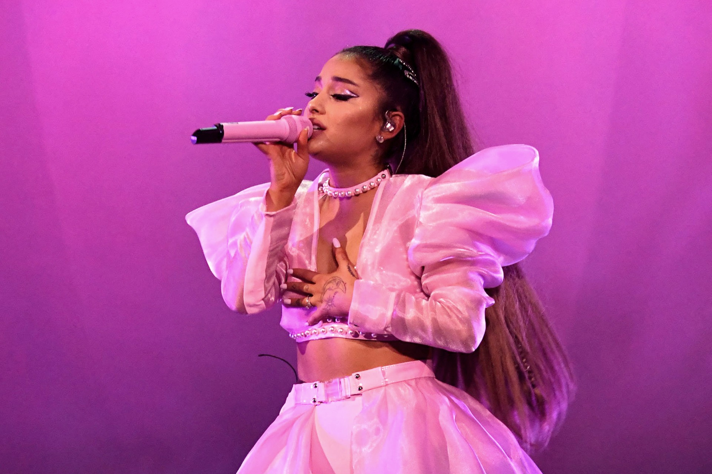

Ariana Grande
Ariana Grande é uma cantora, atriz, compositora e produtora musical estadunidense natural de Boca Raton na Califórnia. Sua estreia foi na Brodway aos 15 anos atuando como Charlotte no musical 13. Entre 2010 e 2013 ficou conhecida por atuar como Cat Valentine na série televisa Brilhante Victoria da Nickelodeon que foi o inicio de sua carreira musical com a trilha sonora do seriado. Desde o início de sua carreira musical Ariana já lançou 6 albúns de studio, O primeiro Yours Truly foi lançado em 2013 e que alcançou o primeiro lugar na parada de álbuns da BillBoard. Lançou o segundo álbum My Everything em 2014 , Dangerous Woman em 2016 seguido dos lançamentos de Sweetner e Thank You Next em 2018 e 2019. Em outubro de 2020 a cantora lançou seu ultimo álbum de studio até então, intitulado Positions . Suas premiações contam com três American Music Awards, três MTV Europe Music Awards, nove MTV Video Music Awards e doze indicações ao Grammy, vencendo 2 categorias. Ariana também já foi nomeada pela revista Times como uma das 100 pessoas mais influentes do mundo em 2016 e em 2018 ganhou o premio da Billboard “Woman of The Year”. Em 2021, Ariana Grande segue nas paradas de sucesso no mundo da música pop, se reiventand como cantora e artista está a participar da atual temporada do The Voice como jurada pela primeira vez, junto com grandes nomes da musica como Kelly Clarkson, John Legend e Blake Shelton.